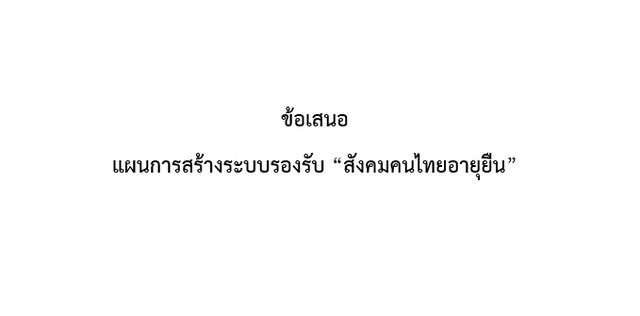

ผลงานทางวิชาการ
ข้อเสนอต่อรัฐบาล
สมุดปกขาวและข้อเสนอเชิงนโยบายที่ราชบัณฑิตยสภาเสนอต่อรัฐบาลและหน่วยงานของรัฐ
สมุดปกขาวและข้อเสนอเชิงนโยบาย
ราชบัณฑิตยสภาเสนอความเห็นทางวิชาการต่อรัฐบาลและหน่วยงานของรัฐในรูปสมุดปกขาวและข้อเสนอเชิงนโยบาย จากงานวิชาการของทั้ง ๓ สำนัก
ฉบับล่าสุด · การใช้ภาษาไทยในสื่อดิจิทัล
- ด้านการศึกษา — ภาษาไทยในโรงเรียนและการพัฒนาครู
- ด้านสื่อมวลชนและบริการภาครัฐ — ใช้ภาษาที่ถูกต้องและชัดเจน
- ตัวชี้วัดเพื่อติดตามผล
ข้อเสนอที่เผยแพร่แล้ว 3 รายการ
These reports are published in Thai on the academy websites.
- ราชบัณฑิตยสภา ความเหลื่อมล้ำ: ข้อเท็จจริง และข้อเสนอแนะเชิงนโยบาย รายงานฉบับรวมเล่มของราชบัณฑิตยสภา ว่าด้วยสถานการณ์ความเหลื่อมล้ำในสังคมไทย และข้อเสนอแนะเชิงนโยบายต่อรัฐบาล ฉบับรวมเล่ม · PDF เปิด PDF (เปิดในแท็บใหม่)
- ราชบัณฑิตยสภา สังคมคนไทยอายุยืน: ความจริง วิกฤติการณ์ และข้อแนะนำ ขณะที่บ้านเมืองของเรากำลังเผชิญกับการคุกคามของโรคระบาดโควิด-19 ประชาชนทุกวัยโดยเฉพาะผู้สูงอายุจะมีความอ่อนไหวและเสี่ยงที่จะเสียชีวิตในอัตราที่สูง ในอีก 10 ปีข้างหน้า สังคมไทยจะมีสัดส่วนผู้สูงอายุเทียบกับประชากรทั้งประเทศสูงมากถึงร้อยละ 30 คนวัยทำงานจะมีสัดส่วน อ่านต่อ
-

ราชบัณฑิตยสภา ข้อเสนอ แผนการสร้างระบบรองรับ “สังคมคนไทยอายุยืน” สังคมคนไทยอายุยืนความจริง วิกฤติการณ์ และข้อแนะนำ จัดทำโดยคณะกรรมการเฉพาะกิจจัดทำข้อเสนอแผนแม่บทเรื่องสังคมผู้สูงอายุต่อรัฐบาลราชบัณฑิตยสภา จากการเปลี่ยนแปลงโครงสร้างของประชากรในประเทศไทยที่เกิดขึ้นอย่างรวดเร็ว ซึ่งในอนาคตอันใกล้นี้สังคมไทยจะก้าวเข้าสู่สังคมที อ่านต่อ